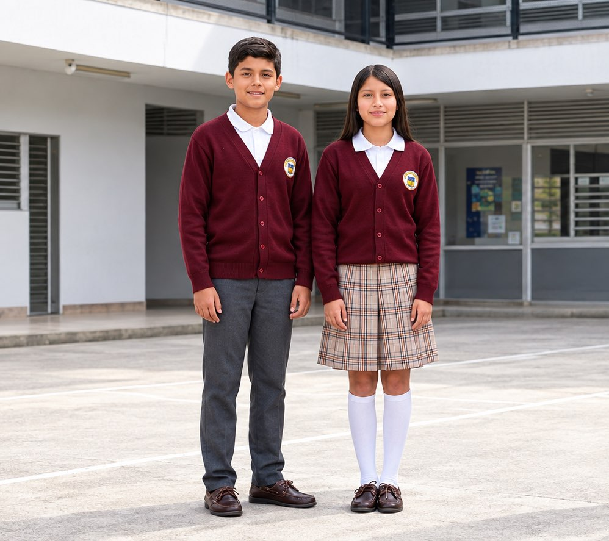
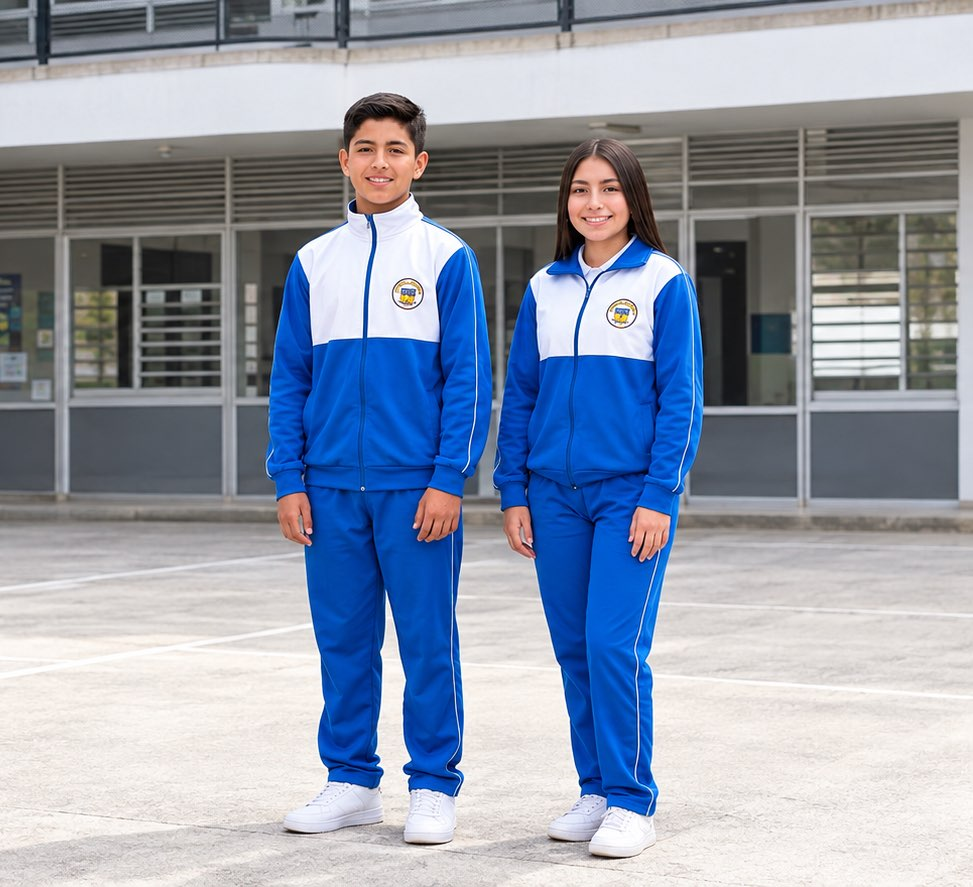
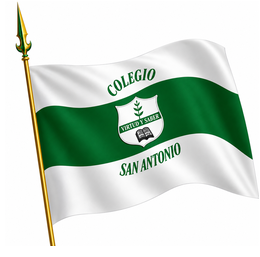
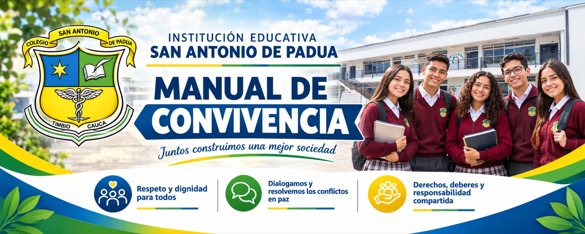

Misión
Brindar una formación integral que fortalezca el conocimiento, los valores, la convivencia y el desarrollo de habilidades en los estudiantes, promoviendo una comunidad educativa comprometida con el aprendizaje y el crecimiento personal.
Visión
Consolidarse como una institución educativa reconocida por su compromiso con la formación integral, la calidad académica, los valores y la participación de su comunidad, preparando a los estudiantes para afrontar de manera responsable los retos de su entorno.
Rectoría
Rector: Wilson Fernando Orozco Velasco
Uniformes

Uniforme de Educación Física

Escudo
El escudo institucional está conformado por tres cuarteles. En el primero, sobre campo azul, se destaca una estrella de oro. En el segundo, sobre campo verde, aparecen un libro y una pluma. En el cuartel inferior, sobre campo de oro, se encuentra el caduceo. El escudo está enmarcado por dos cintas: la superior con el nombre de la institución y la inferior con los colores de la bandera institucional, e incluye referencias a la Villa Heráldica de Timbío y al departamento del Cauca.

Bandera
La bandera institucional es de forma rectangular, conformada por tres franjas horizontales de igual tamaño. Las franjas blancas de los extremos simbolizan la fe, la paz y la pureza; la franja central de color verde representa la naturaleza, la esperanza y la fertilidad de las virtudes. En el centro se destaca la flor blanca, símbolo de San Antonio de Padua y San José, junto con el libro, símbolo del conocimiento, acompañados del lema tradicional "Virtud y Saber".
Himno Institucional
Coro
San Antonio de Padua es Colegio
que brinda integral formación,
a quien a sus lares se coge,
sediento de gran superación.
Estrofa I
En tus aulas bebemos la ciencia
Que nos hace en la vida triunfar.
Tus docentes con gran eficiencia,
Altas metas te harán alcanzar.
De minerva, alcázar glorioso,
tus alumnos te quieren cantar
y Timbío se siente orgulloso
al poder tal plantel albergar.
Estrofa II
En la noche de gran ignorancia
Tú señalas con mágica luz,
las doctrinas que en vida nos diera
el Divino maestro Jesús.
San Antonio de Padua dispense
su celeste y gran protección,
a quien viene a librar en tus fuentes
de la ciencia el munífico don.
Estrofa III
Si la ciencia transforma la industria
y la técnica da perfección,
el estudio las mentes adiestra
y a los hombres les da erudición.
Transformar en servicio la vida,
es muy noble y sublime ambición,
la existencia así concebida
llena el alma de noble fruición.
Estrofa IV
Compromisos de todos el cambio
del Colegio es el lema a seguir
importante consigna que todos
prometemos fielmente cumplir.
La estrella, el libro y la pluma
nos señalan la senda del bien,
tus alumnos por ello te cantan
como muestra de su gratitud.
Letra: Hno. Víctor Villegas V. — Música y Arreglos: Jorge y Fabio Coral G.
Reglamento / Manual de Convivencia

Documentación Institucional
Proyecto Educativo Institucional (PEI)
El Proyecto Educativo Institucional reúne los principios, objetivos y orientaciones que guían la formación académica, humana y social de una comunidad educativa.
Sistema Institucional de Evaluación de Estudiantes
El sistema de evaluación permite acompañar el aprendizaje de los estudiantes, reconocer sus avances y establecer criterios para valorar su desempeño académico.
Reglamento / Manual de Convivencia
El Manual de Convivencia orienta las relaciones dentro de la comunidad educativa, promoviendo el respeto, la responsabilidad, la participación y la solución pacífica de los conflictos.